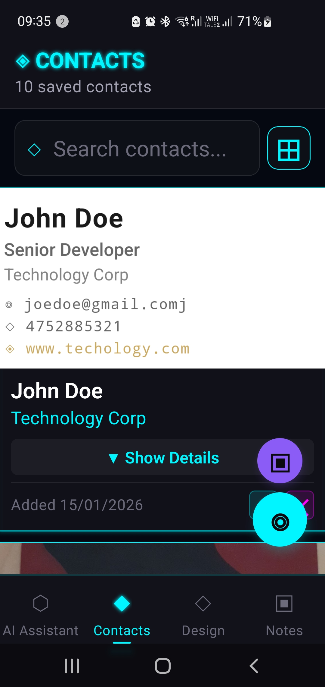
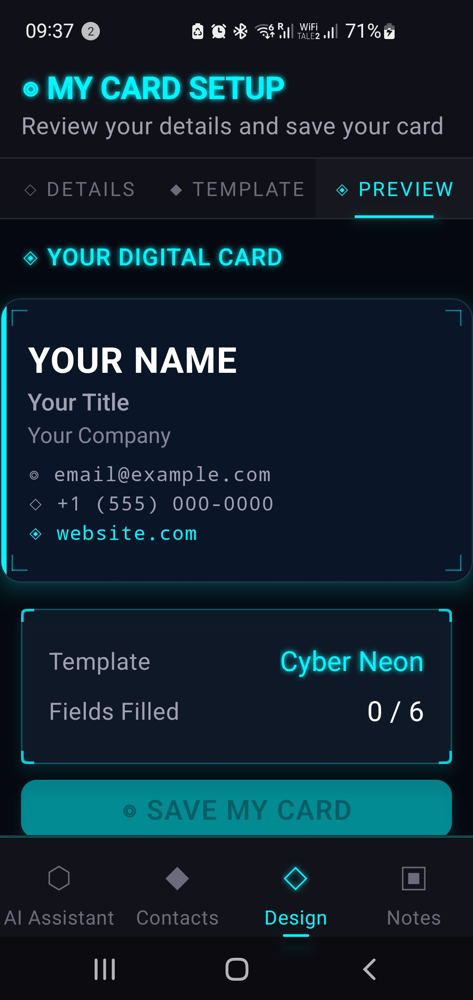
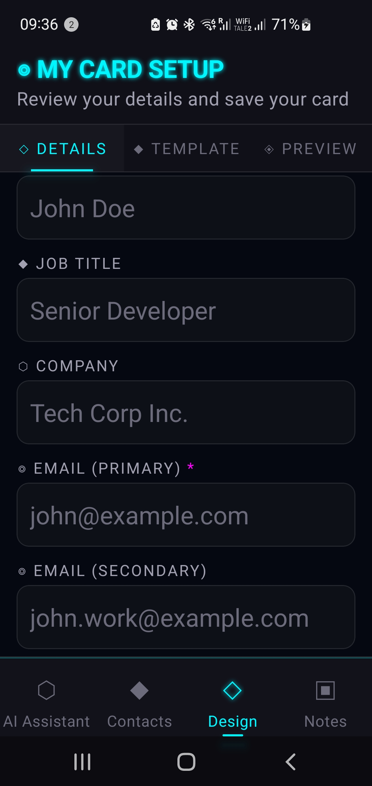
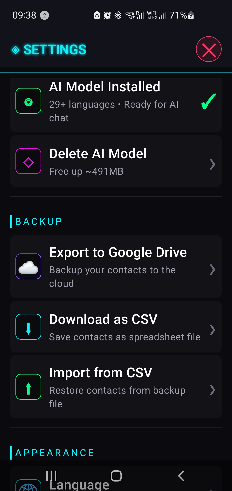

Your personal AI assistant helps you manage contacts smartly. Ask questions about your contacts using natural language, like "Who works at Microsoft?" or "Show me contacts in New York". The AI can search by company, location, or any field in your contacts. Access the AI Assistant from the main Contacts screen.
Tu asistente de IA personal te ayuda a gestionar contactos de forma inteligente. Haz preguntas sobre tus contactos usando lenguaje natural, como "¿Quién trabaja en Microsoft?" o "Muéstrame contactos en Nueva York". La IA puede buscar por empresa, ubicación o cualquier campo en tus contactos. Accede al Asistente IA desde la pantalla principal de Contactos.
Ihr persönlicher KI-Assistent hilft Ihnen, Kontakte intelligent zu verwalten. Stellen Sie Fragen zu Ihren Kontakten in natürlicher Sprache, wie "Wer arbeitet bei Microsoft?" oder "Zeige mir Kontakte in New York". Die KI kann nach Firma, Standort oder jedem Feld in Ihren Kontakten suchen. Greifen Sie auf den KI-Assistenten über den Hauptbildschirm Kontakte zu.
Votre assistant IA personnel vous aide à gérer vos contacts intelligemment. Posez des questions sur vos contacts en langage naturel, comme "Qui travaille chez Microsoft?" ou "Montrez-moi les contacts à New York". L'IA peut rechercher par entreprise, lieu ou tout champ dans vos contacts. Accédez à l'Assistant IA depuis l'écran principal des Contacts.
Din personlige AI-assistent hjelper deg med å administrere kontakter smart. Still spørsmål om kontaktene dine ved å bruke naturlig språk, som "Hvem jobber i Microsoft?" eller "Vis meg kontakter i New York". AI-en kan søke etter firma, sted eller ethvert felt i kontaktene dine. Få tilgang til AI-assistenten fra hovedskjermen Kontakter.
Seu assistente de IA pessoal ajuda você a gerenciar contatos de forma inteligente. Faça perguntas sobre seus contatos usando linguagem natural, como "Quem trabalha na Microsoft?" ou "Mostre-me contatos em Nova York". A IA pode pesquisar por empresa, localização ou qualquer campo em seus contatos. Acesse o Assistente de IA na tela principal de Contatos.
 SCAN BUSINESS CARD
Tap the camera button in the Contacts screen to photograph a physical business card. Our advanced OCR technology extracts contact information including name, company, email, phone numbers, and website. After scanning, review and edit the extracted details before saving to your contacts.
Toca el botón de la cámara en la pantalla de Contactos para fotografiar una tarjeta de presentación física. Nuestra tecnología OCR avanzada extrae información de contacto incluyendo nombre, empresa, correo electrónico, números de teléfono y sitio web. Después de escanear, revisa y edita los detalles extraídos antes de guardar en tus contactos.
Tippen Sie auf die Kamera-Schaltfläche im Kontakte-Bildschirm, um eine physische Visitenkarte zu fotografieren. Unsere fortschrittliche OCR-Technologie extrahiert Kontaktinformationen einschließlich Name, Firma, E-Mail, Telefonnummern und Website. Nach dem Scannen überprüfen und bearbeiten Sie die extrahierten Details, bevor Sie sie in Ihren Kontakten speichern.
Appuyez sur le bouton appareil photo dans l'écran Contacts pour photographier une carte de visite physique. Notre technologie OCR avancée extrait les informations de contact, y compris le nom, l'entreprise, l'e-mail, les numéros de téléphone et le site Web. Après la numérisation, vérifiez et modifiez les détails extraits avant de les enregistrer dans vos contacts.
Trykk på kameraknappen i Kontakter-skjermen for å ta bilde av et fysisk visittkort. Vår avanserte OCR-teknologi trekker ut kontaktinformasjon inkludert navn, firma, e-post, telefonnumre og nettsted. Etter skanning, gjennomgå og rediger de ekstraherte detaljene før du lagrer til kontaktene dine.
Toque no botão da câmera na tela de Contatos para fotografar um cartão de visita físico. Nossa tecnologia OCR avançada extrai informações de contato, incluindo nome, empresa, e-mail, números de telefone e site. Após a digitalização, revise e edite os detalhes extraídos antes de salvar em seus contatos.
SCAN QR CODE
Use the QR code scanner button to quickly capture vCard data from someone's digital business card or QR code. The app automatically parses the vCard format and saves all contact details instantly. This is the fastest way to exchange contact information.
Usa el botón escáner de código QR para capturar rápidamente datos vCard de la tarjeta de presentación digital o código QR de alguien. La aplicación analiza automáticamente el formato vCard y guarda todos los detalles de contacto al instante. Esta es la forma más rápida de intercambiar información de contacto.
Verwenden Sie die QR-Code-Scanner-Schaltfläche, um vCard-Daten von jemandes digitaler Visitenkarte oder QR-Code schnell zu erfassen. Die App analysiert automatisch das vCard-Format und speichert alle Kontaktdetails sofort. Dies ist der schnellste Weg, Kontaktinformationen auszutauschen.
Utilisez le bouton scanner de code QR pour capturer rapidement les données vCard de la carte de visite numérique ou du code QR de quelqu'un. L'application analyse automatiquement le format vCard et enregistre tous les détails de contact instantanément. C'est le moyen le plus rapide d'échanger des informations de contact.
Bruk QR-kodeskanner-knappen for å raskt fange opp vCard-data fra noens digitale visittkort eller QR-kode. Appen analyserer automatisk vCard-formatet og lagrer alle kontaktdetaljer øyeblikkelig. Dette er den raskeste måten å utveksle kontaktinformasjon på.
Use o botão scanner de código QR para capturar rapidamente dados vCard do cartão de visita digital ou código QR de alguém. O aplicativo analisa automaticamente o formato vCard e salva todos os detalhes de contato instantaneamente. Esta é a maneira mais rápida de trocar informações de contato.
 MY QR CODE
Create and share your own digital business card. First, set up your card by scanning your physical card or entering details manually. Once saved, access it from the Contacts screen to display your QR code that others can scan. You can also share your business card image directly through messaging apps or email.
Crea y comparte tu propia tarjeta de presentación digital. Primero, configura tu tarjeta escaneando tu tarjeta física o ingresando detalles manualmente. Una vez guardada, accede a ella desde la pantalla de Contactos para mostrar tu código QR que otros pueden escanear. También puedes compartir la imagen de tu tarjeta de presentación directamente a través de aplicaciones de mensajería o correo electrónico.
Erstellen und teilen Sie Ihre eigene digitale Visitenkarte. Richten Sie zunächst Ihre Karte ein, indem Sie Ihre physische Karte scannen oder Details manuell eingeben. Einmal gespeichert, greifen Sie vom Kontakte-Bildschirm darauf zu, um Ihren QR-Code anzuzeigen, den andere scannen können. Sie können Ihr Visitenkartenbild auch direkt über Messaging-Apps oder E-Mail teilen.
Créez et partagez votre propre carte de visite numérique. Tout d'abord, configurez votre carte en numérisant votre carte physique ou en saisissant les détails manuellement. Une fois enregistrée, accédez-y depuis l'écran Contacts pour afficher votre code QR que d'autres peuvent scanner. Vous pouvez également partager directement l'image de votre carte de visite via des applications de messagerie ou par e-mail.
Opprett og del ditt eget digitale visittkort. Først, sett opp kortet ditt ved å skanne det fysiske kortet ditt eller ved å legge inn detaljer manuelt. Når det er lagret, få tilgang til det fra Kontakter-skjermen for å vise QR-koden din som andre kan skanne. Du kan også dele visittkortet ditt direkte via meldingsapper eller e-post.
Crie e compartilhe seu próprio cartão de visita digital. Primeiro, configure seu cartão digitalizando seu cartão físico ou inserindo detalhes manualmente. Uma vez salvo, acesse-o na tela de Contatos para exibir seu código QR que outros podem escanear. Você também pode compartilhar a imagem do seu cartão de visita diretamente por meio de aplicativos de mensagens ou e-mail.
VIEWING & EDITING CONTACTS
Tap any contact card to view full details including all phone numbers, emails, and notes. Use the edit button to modify information or add additional details. The app supports multiple phone numbers and email addresses per contact. Long-press any contact card to delete it from your collection.
Toca cualquier tarjeta de contacto para ver los detalles completos, incluyendo todos los números de teléfono, correos electrónicos y notas. Usa el botón de editar para modificar información o agregar detalles adicionales. La aplicación admite múltiples números de teléfono y direcciones de correo electrónico por contacto. Mantén presionada cualquier tarjeta de contacto para eliminarla de tu colección.
Tippen Sie auf eine beliebige Kontaktkarte, um vollständige Details einschließlich aller Telefonnummern, E-Mails und Notizen anzuzeigen. Verwenden Sie die Bearbeitungsschaltfläche, um Informationen zu ändern oder zusätzliche Details hinzuzufügen. Die App unterstützt mehrere Telefonnummern und E-Mail-Adressen pro Kontakt. Halten Sie eine beliebige Kontaktkarte gedrückt, um sie aus Ihrer Sammlung zu löschen.
Appuyez sur n'importe quelle carte de contact pour afficher tous les détails, y compris tous les numéros de téléphone, e-mails et notes. Utilisez le bouton de modification pour modifier les informations ou ajouter des détails supplémentaires. L'application prend en charge plusieurs numéros de téléphone et adresses e-mail par contact. Appuyez longuement sur n'importe quelle carte de contact pour la supprimer de votre collection.
Trykk på et hvilket som helst kontaktkort for å se fullstendige detaljer inkludert alle telefonnumre, e-poster og notater. Bruk rediger-knappen for å endre informasjon eller legge til flere detaljer. Appen støtter flere telefonnumre og e-postadresser per kontakt. Trykk og hold på et hvilket som helst kontaktkort for å slette det fra samlingen din.
Toque em qualquer cartão de contato para visualizar todos os detalhes, incluindo todos os números de telefone, e-mails e notas. Use o botão de edição para modificar informações ou adicionar detalhes adicionais. O aplicativo suporta vários números de telefone e endereços de e-mail por contato. Pressione e segure qualquer cartão de contato para excluí-lo da sua coleção.
 DESIGN STUDIO
Customize your business card appearance with professional templates. Access Design Studio when setting up your owner card. Choose from various futuristic designs with different color schemes and effects. Preview your card before saving. The design you select will be used when sharing your QR code and card image.
Personaliza la apariencia de tu tarjeta de presentación con plantillas profesionales. Accede al Estudio de Diseño al configurar tu tarjeta de propietario. Elige entre varios diseños futuristas con diferentes esquemas de color y efectos. Previsualiza tu tarjeta antes de guardar. El diseño que selecciones se utilizará al compartir tu código QR e imagen de tarjeta.
Passen Sie das Erscheinungsbild Ihrer Visitenkarte mit professionellen Vorlagen an. Greifen Sie auf das Design Studio zu, wenn Sie Ihre Besitzerkarte einrichten. Wählen Sie aus verschiedenen futuristischen Designs mit unterschiedlichen Farbschemata und Effekten. Zeigen Sie Ihre Karte in der Vorschau an, bevor Sie sie speichern. Das von Ihnen gewählte Design wird beim Teilen Ihres QR-Codes und Kartenbildes verwendet.
Personnalisez l'apparence de votre carte de visite avec des modèles professionnels. Accédez au Studio de Design lors de la configuration de votre carte de propriétaire. Choisissez parmi divers designs futuristes avec différents schémas de couleurs et effets. Prévisualisez votre carte avant de l'enregistrer. Le design que vous sélectionnez sera utilisé lors du partage de votre code QR et de l'image de carte.
Tilpass visittkortet ditt med profesjonelle maler. Få tilgang til Design Studio når du setter opp eierkortet ditt. Velg blant forskjellige futuristiske design med ulike fargepaletter og effekter. Forhåndsvis kortet ditt før du lagrer. Designet du velger vil bli brukt når du deler QR-koden og kortbildet ditt.
Personalize a aparência do seu cartão de visita com modelos profissionais. Acesse o Design Studio ao configurar seu cartão de proprietário. Escolha entre vários designs futuristas com diferentes esquemas de cores e efeitos. Visualize seu cartão antes de salvar. O design que você selecionar será usado ao compartilhar seu código QR e imagem do cartão.
SEARCH & FILTER
Use the search bar at the top of the Contacts screen to quickly find contacts by name, company, or any other field. The search is instant and works across all contact information. You can also use the AI Assistant for more advanced queries.
Usa la barra de búsqueda en la parte superior de la pantalla de Contactos para encontrar rápidamente contactos por nombre, empresa o cualquier otro campo. La búsqueda es instantánea y funciona en toda la información de contacto. También puedes usar el Asistente IA para consultas más avanzadas.
Verwenden Sie die Suchleiste oben im Kontakte-Bildschirm, um schnell Kontakte nach Name, Firma oder einem anderen Feld zu finden. Die Suche ist sofort und funktioniert über alle Kontaktinformationen. Sie können auch den KI-Assistenten für erweiterte Abfragen verwenden.
Utilisez la barre de recherche en haut de l'écran Contacts pour trouver rapidement des contacts par nom, entreprise ou tout autre champ. La recherche est instantanée et fonctionne sur toutes les informations de contact. Vous pouvez également utiliser l'Assistant IA pour des requêtes plus avancées.
Bruk søkelinjen øverst på Kontakter-skjermen for å raskt finne kontakter etter navn, firma eller et annet felt. Søket er øyeblikkelig og fungerer på tvers av all kontaktinformasjon. Du kan også bruke AI-assistenten for mer avanserte spørringer.
Use a barra de pesquisa na parte superior da tela de Contatos para encontrar rapidamente contatos por nome, empresa ou qualquer outro campo. A pesquisa é instantânea e funciona em todas as informações de contato. Você também pode usar o Assistente de IA para consultas mais avançadas.
SHARING CONTACTS
From the contact detail screen, use the share button to send contact information via messaging apps, email, or any other sharing method. You can share as text (vCard format) or as a beautifully designed card image.
Desde la pantalla de detalle del contacto, usa el botón compartir para enviar información de contacto a través de aplicaciones de mensajería, correo electrónico o cualquier otro método de compartir. Puedes compartir como texto (formato vCard) o como una imagen de tarjeta bellamente diseñada.
Verwenden Sie auf dem Kontaktdetailbildschirm die Schaltfläche "Teilen", um Kontaktinformationen über Messaging-Apps, E-Mail oder eine andere Freigabemethode zu senden. Sie können als Text (vCard-Format) oder als schön gestaltetes Kartenbild teilen.
Depuis l'écran de détail du contact, utilisez le bouton de partage pour envoyer des informations de contact via des applications de messagerie, e-mail ou toute autre méthode de partage. Vous pouvez partager sous forme de texte (format vCard) ou en tant qu'image de carte magnifiquement conçue.
Fra kontaktdetaljskjermen, bruk del-knappen for å sende kontaktinformasjon via meldingsapper, e-post eller en annen delingsmetode. Du kan dele som tekst (vCard-format) eller som et vakkert designet kortbilde.
Na tela de detalhes do contato, use o botão de compartilhamento para enviar informações de contato por meio de aplicativos de mensagens, e-mail ou qualquer outro método de compartilhamento. Você pode compartilhar como texto (formato vCard) ou como uma imagem de cartão lindamente projetada.
 DATA MANAGEMENT
All your contacts are stored securely on your device. The app includes automatic backup features and you can export your contacts as CSV for use in other applications. Access data management options from this Settings screen.
Todos tus contactos se almacenan de forma segura en tu dispositivo. La aplicación incluye funciones de copia de seguridad automática y puedes exportar tus contactos como CSV para usar en otras aplicaciones. Accede a las opciones de gestión de datos desde esta pantalla de Configuración.
Alle Ihre Kontakte werden sicher auf Ihrem Gerät gespeichert. Die App enthält automatische Backup-Funktionen und Sie können Ihre Kontakte als CSV für die Verwendung in anderen Anwendungen exportieren. Greifen Sie auf Datenverwaltungsoptionen über diesen Einstellungsbildschirm zu.
Tous vos contacts sont stockés en toute sécurité sur votre appareil. L'application comprend des fonctionnalités de sauvegarde automatique et vous pouvez exporter vos contacts au format CSV pour une utilisation dans d'autres applications. Accédez aux options de gestion des données depuis cet écran Paramètres.
Alle kontaktene dine lagres sikkert på enheten din. Appen inkluderer automatiske sikkerhetskopieringsfunksjoner og du kan eksportere kontaktene dine som CSV for bruk i andre applikasjoner. Få tilgang til databehandlingsalternativer fra denne Innstillinger-skjermen.
Todos os seus contatos são armazenados com segurança em seu dispositivo. O aplicativo inclui recursos de backup automático e você pode exportar seus contatos como CSV para uso em outros aplicativos. Acesse as opções de gerenciamento de dados nesta tela de Configurações.